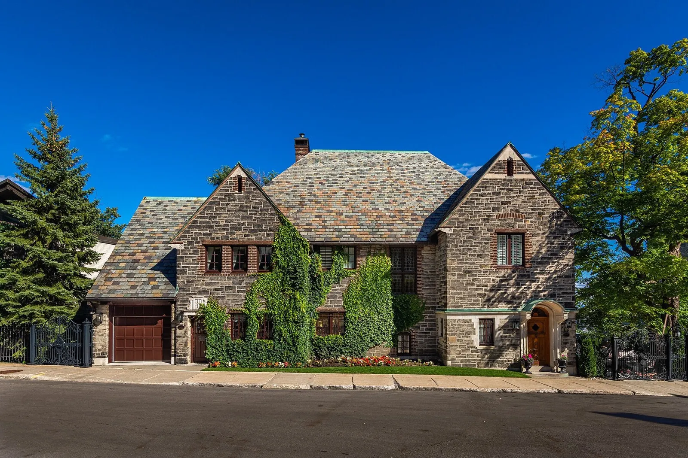
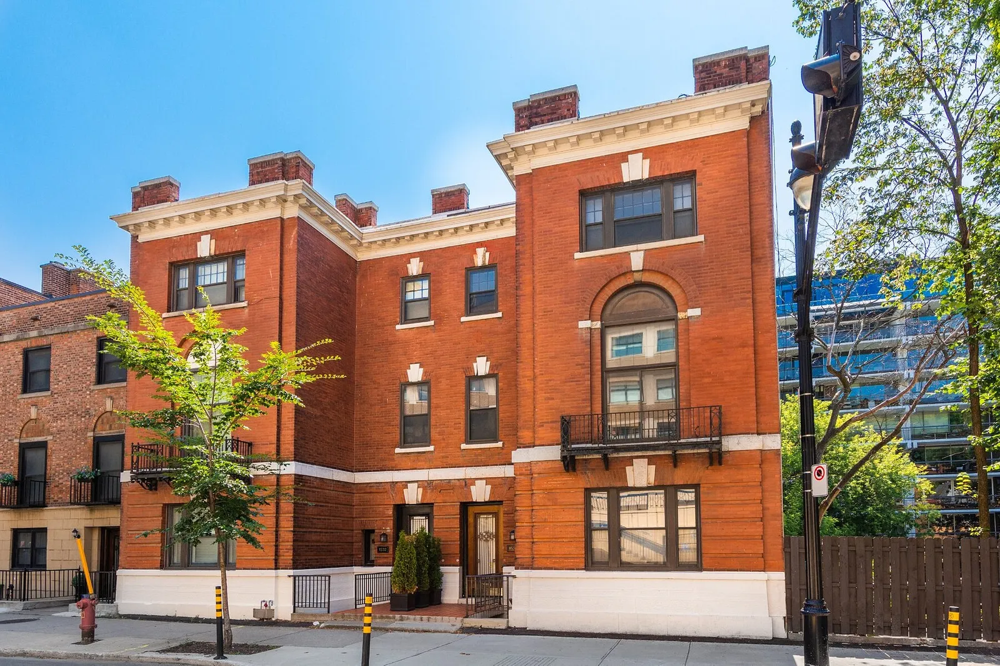
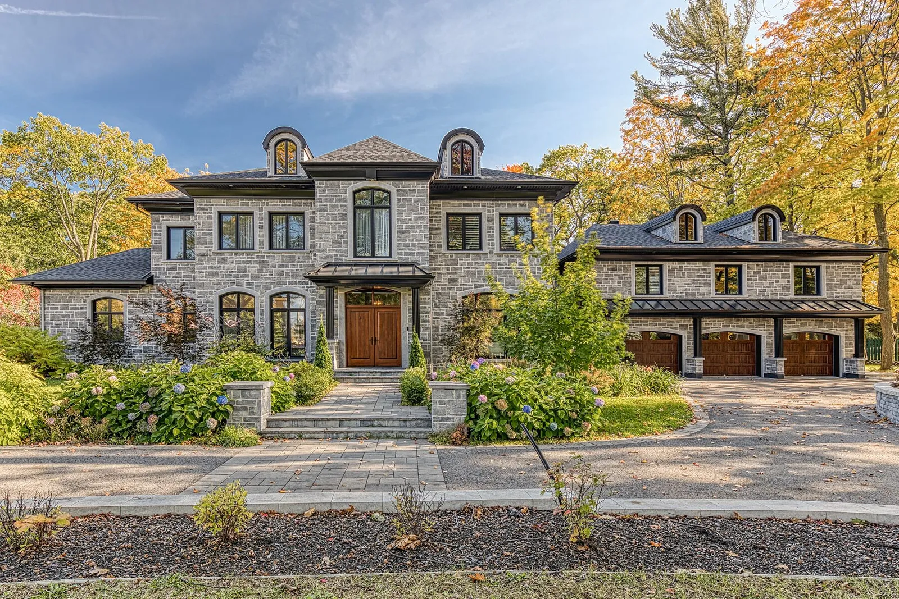

| Maisons | Description | Cout | Localisation |
|---|---|---|---|
|  | Situé à côté du parc Mont-Royal, cette majestueuse maison de pierre construite en 1928 par le célèbre architecte Percy Nobbs offre une lignée maximum au cœur du Mille carré doré. Avec des vues spectaculaires sur l'eau, la ville et la montagne ainsi qu'un magnifique jardin luxuriant à plusieurs niveaux avec une piscine d'eau salée, ce chef-d'œuvre architectural a été méticuleusement rénové et restauré. | 8 950 000$ CAD |
1444 Rue Redpath-Crescent Montreal, Quebec, H3G1A2 Canada |
|  | Cette imposante et majestueuse maison de ville a été entretenue et restaurée avec soin et art par le propriétaire actuel : avec un hall d'entrée spacieux, de nombreuses cheminées, une cour privée et un grand garage double, les vestiges de l'âge d'or de Montréal demeurent bien vivants dans cette résidence exceptionnelle. Un emplacement indéniablement urbain avec l'intimité et l'ambiance d'un manoir à la campagne | 2 995 000 $ CAD |
1534 Av. des Pins O. Montreal, Quebec, H3G1B4 Canada |
|  | Magnifique architecture et matériaux haut de gamme. Cette propriété récemment construite de 119 pieds linéaires avec une façade toute en pierre est située sur un vaste terrain de 42 000 pieds carrés au coeur de Sillery, à quelques pas de l'avenue Myrand et de l'Université Laval. | 4 200 000 $ CAD |
2155 Boul. René-Lévesque O. Quebec, Quebec, G1T1A3 Canada |
{kind=link}